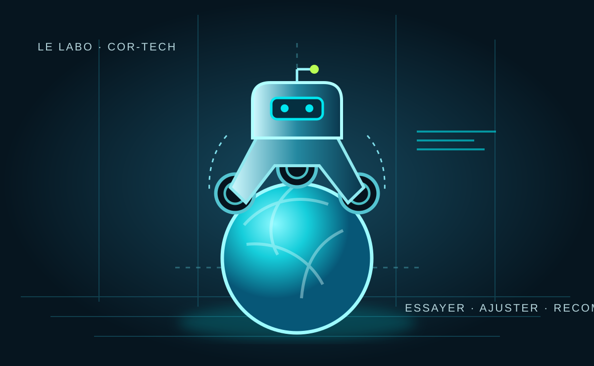

LE LABO.
À PLUSIEURS, ON VA PLUS LOIN.
Deux heures par semaine pour fabriquer quelque chose ensemble, apprendre les uns des autres et suivre une idée jusqu’au bout.
Un robot en équilibre sur une balle ?
Le BallBot est un robot qui doit détecter son inclinaison et déplacer la balle sous lui pour rester debout. C’est une belle occasion de réunir impression 3D, électronique, capteurs, Arduino et programmation autour d’un même objet.
On part du projet documenté par TechKnowTone ↗, on essaie de le faire fonctionner, puis on voit comment le faire évoluer à notre sauce.

Pas besoin de tout savoir faire.
Ce projet est fait pour croiser les envies et les compétences. On avance à plusieurs, en essayant et en ajustant.
Concevoir & imprimer
Comprendre les pièces, préparer l’impression 3D et assembler la structure.
Brancher & mesurer
Explorer les moteurs, les capteurs, l’alimentation et les connexions.
Coder & régler
Faire réagir le robot et chercher, réglage après réglage, le bon équilibre.
On essaie. On apprend. On recommence.
while (!balanced) { tryAgain(); }Partant pour le défi ?
Écrivez-nous pour rejoindre le Labo du vendredi soir.